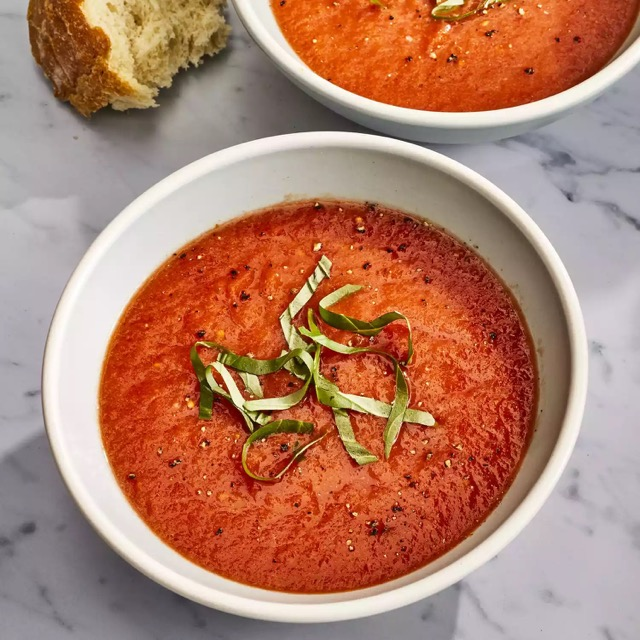

Fresh Tomato Soup

Desription
This fresh Tomato Soup recipe could not be
anymore perfect for your next meal. This soup has
the perfect fresh tomato taste without using heavy cream.
Ingredients
- 4 cups chopped fresh tomatoes
- 1 slice onion
- 4 cloves garlic
- 2 cups chicken broth
- 2 tablespooms butter
- 2 tablespoons all-purpose flour
- 1 tablespoon salt
- 2 teaspoons white sugar, or to taste
Directions
- In a stockpot, over medium heat,
combine the tomatoes, large slice
of onion, garlic cloves, and chicken
broth. Bring to a boil, and gently
boil for about 20 minutes to blend
all of the flavors. Remove from heat
and run the mixture through a food mill
into a large bowl, or pan. Discard any
stuff left over in the food mill.
- In the now empty stockpot, melt the butter
over medium heat. Stir in the flour to make
a roux, cooking until the roux is a medium
brown. Gradually whisk in a bit of the
tomato mixture, so that no lumps form, then
stir in the rest. Season with sugar and salt,
and adjust to taste.